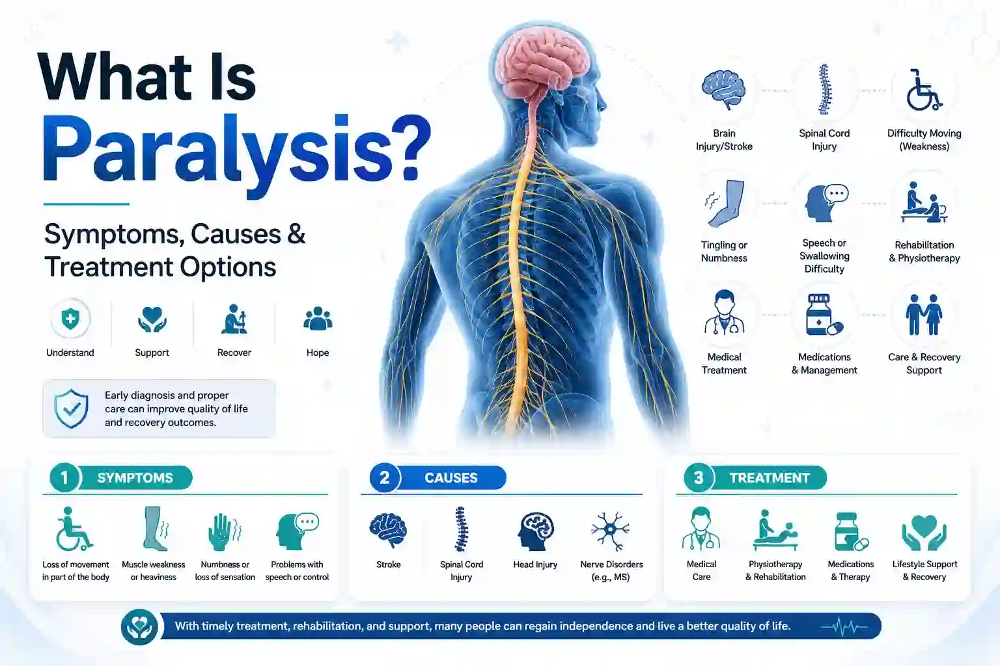
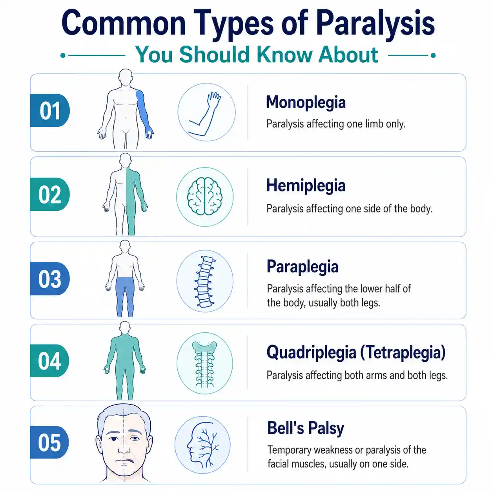

What Is Paralysis? Symptoms, Causes & Treatment Options in Pune


25
May

Dr. Krutika Bhadane
PT (Neuro), BPTh, MPTh (Neurosciences), 3+ years clinical
experience in neurological rehabilitation
It often starts with something small. A cup slips from a hand at breakfast. One side of a smile feels heavy. A leg refuses to take the next step. For many families in Pune, that quiet moment becomes the first sign of something that will change daily life: paralysis. Whether it follows a stroke at midnight or a road accident on a busy weekday, paralysis arrives quickly and asks a great deal from everyone around it.
The good news is that today, paralysis treatment is no longer about waiting and hoping. With early diagnosis, structured rehabilitation, and a strong support system, many people regain meaningful movement, speech, and independence. This guide explains what paralysis is, the different types, the common causes of a paralysis attack, the warning signs to watch for, and the modern care options that are helping patients recover faster and more confidently than ever.
What Is Paralysis? A Simple Explanation
Paralysis is the partial or complete loss of voluntary muscle control in one or more parts of the body. It happens when the communication between the brain, spinal cord, and muscles is disrupted. The signals that normally tell a hand to grip a glass or a foot to lift over a step simply do not get through. According to the Cleveland Clinic, around 1 in 50 people in the United States lives with some form of paralysis, which gives a sense of how common this condition really is across the world.
Paralysis is not a disease in itself. It is the visible result of a deeper problem in the nervous system. Some forms are temporary and resolve within days or weeks. Others are long-term and require structured paralysis care, lifestyle changes, and ongoing rehabilitation. The right treatment plan depends on the underlying cause, the timing of therapy, and how well the person responds to a personalized recovery program.
Common Types of Paralysis You Should Know About

Doctors classify paralysis based on which parts of the body are affected and how the muscles behave. Understanding the types of paralysis, as explained by resources like the UK's National Health Service (NHS), helps families ask better questions during medical appointments and prepare for the road ahead.
- Monoplegia affects only one limb, usually an arm or a leg. It often follows localized nerve damage, a focal stroke, or a peripheral nerve injury.
- Hemiplegia affects one entire side of the body. It is the most common pattern seen after a stroke and may also occur after a brain injury.
- Paraplegia affects both legs and, in some cases, the lower trunk. It is usually the result of a spinal cord injury in the lower or middle back.
- Quadriplegia (Tetraplegia) affects all four limbs and often the trunk. Cervical (neck) spinal cord injuries are the typical cause.
- Bell's Palsy is a sudden, usually temporary, paralysis of one side of the face. The eyelid may not close fully, the smile may droop, and taste can change. Reassuringly, Johns Hopkins Medicine notes that most people with Bell's palsy recover full facial strength within two weeks to six months when treated early.
Doctors also describe paralysis in terms of muscle tone. Flaccid paralysis presents with limp, weak muscles and reduced reflexes. Spastic paralysis presents with stiffness, spasms, and brisk reflexes. The pattern guides every part of the rehabilitation plan, from stretching routines to splinting and medication choices.
What Are the Main Causes of a Paralysis Attack?
The causes of paralysis attacks vary widely, but most come down to damage somewhere along the path from the brain to the muscles. Knowing the common triggers helps families take prevention seriously and act quickly when warning signs appear.
- Stroke is the leading cause of sudden paralysis in adults. When a blood vessel in the brain is blocked or bursts, brain cells lose oxygen within minutes. The National Institute of Neurological Disorders and Stroke (NINDS) highlights a critical three-hour window where clot-dissolving treatment can dramatically improve recovery.
- Spinal cord injury from road accidents, falls, or workplace incidents can cause paraplegia or quadriplegia. Pune sees a significant share of such cases each year due to heavy two-wheeler traffic.
- Traumatic brain injury from accidents or assaults can damage the motor areas of the brain.
- Multiple sclerosis, amyotrophic lateral sclerosis (ALS), and Guillain-Barre syndrome are neurological conditions that can progressively or suddenly cause paralysis.
- Infections such as meningitis, encephalitis, or polio can damage nerves directly.
- Tumors, autoimmune disorders, and certain genetic conditions may also lead to paralysis over time.
Risk rises with uncontrolled high blood pressure, diabetes, vascular disease, smoking, alcohol misuse, and age-related changes. The earlier these are managed, the lower the chance of a sudden paralysis attack.
Early Symptoms and Warning Signs to Watch For
Quick action saves nerve cells and improves recovery outcomes. The following signs deserve immediate medical attention:
- Sudden weakness or numbness in the face, arm, or leg, especially on one side.
- Drooping of the mouth or trouble smiling evenly.
- Slurred speech or difficulty finding words.
- Loss of coordination, balance, or sudden falls.
- Trouble swallowing or coughing while eating.
- Tingling or a pins-and-needles feeling that does not pass.
- Changes in bladder or bowel control.
- A sudden, severe headache with confusion or vision changes.
If any of these signs appear, treat it as a medical emergency. The first few hours of paralysis attack treatment often decide how much function returns. Rush to the nearest hospital or call an ambulance without delay.
Modern Paralysis Treatment Options That Make Recovery Possible
Paralysis treatment today is far more advanced than it was even a decade ago. Care is delivered by a coordinated team that includes neurologists, physiatrists, physiotherapists, occupational therapists, speech-language therapists, psychologists, and trained nurses. The plan is personalized to the cause, severity, and the person's daily roles.
1. Acute Medical Care
Treatment first addresses the root cause. That may mean clot-busting medicine for stroke, surgery for spinal injury, immune treatment for conditions like Guillain-Barre syndrome, or targeted therapy for infections and tumors. NINDS stroke recovery research shows that the size of the brain injury and the speed of medical response together shape how much function returns. The faster the response, the higher the chance of regaining independent movement.
2. Neuro Physiotherapy
Therapists rebuild strength, balance, and walking ability through task-specific drills, sit-to-stand practice, gait training, and harness-supported treadmill work.
3. Occupational Therapy
Occupational therapy restores hand use and the ability to handle daily activities such as bathing, dressing, cooking, writing, and using a phone.
4. Speech and Swallowing Therapy
Speech therapists help patients communicate again and eat safely. Diet textures are progressed slowly to prevent choking, and cognitive exercises support memory and attention.
5. Advanced Technology in Rehabilitation
Functional Electrical Stimulation (FES) sends gentle electrical pulses to weak muscles to reinforce correct movement patterns. Mirror therapy and sensory re-education strengthen brain-body pathways, especially after a stroke. Robotic-assisted training, virtual reality tasks, and biofeedback support repetitive, precise practice that is hard to achieve manually.
6. Spasticity and Pain Management
Stretching, positioning, splinting, and medical options work together to ease stiffness, reduce pain, and improve comfort during daily activities.
7. Nutrition, Mental Health, and Caregiver Training
Recovery is as much about mood, sleep, and family confidence as it is about muscle strength. Dietitians plan high-protein meals, psychologists support coping and motivation, and families learn safe transfers, skin care, and emergency steps.
Why Specialized Paralysis Care in Pune Matters
Paralysis recovery is not a one-room job. It needs a coordinated team, modern equipment, family training, and a steady hand to guide every decision. Choosing the right partner for paralysis care shapes how far and how quickly a person recovers.
Look for a center that offers:
- A multidisciplinary team with neuro-experienced clinicians.
- Evidence-based therapies such as FES, mirror therapy, and robotic training.
- Both residential and outpatient programs to match medical needs.
- Caregiver education from day one.
- Home assessments, tele-rehab follow-ups, and structured discharge plans.
Apricot Care, based in Kharadi, Pune, follows this exact model. Patients receive personalized plans that fit their goals, home setup, and daily roles. Honest timelines, clear milestones, and family involvement are part of every stage. If you have been searching for trusted paralysis care in Pune or for a paralysis treatment near me option that combines clinical depth with compassionate support, this is the kind of care you are looking for.
Conclusion: Recovery Begins With the Right First Step
Paralysis can feel like the body has stopped listening, but the body is rarely the whole story. With the right diagnosis, an evidence-based treatment plan, and a team that understands both medicine and daily life, most patients reclaim meaningful movement, communication, and independence. The earlier care begins, the wider the road to recovery opens.
If you or someone you love is searching for trusted paralysis care in Pune, do not wait for "next week" to make that call. Connect with a Paralysis Rehabilitation Specialist, get a clear assessment, and start a plan built around real goals.
Frequently Asked Questions About Paralysis
Is paralysis always permanent?
No. Many forms of paralysis are temporary or partial. Conditions like Bell's palsy and Guillain-Barre syndrome often improve significantly with early treatment. Even in long-term paralysis, structured therapy can rebuild useful function.
How long does paralysis treatment take?
Recovery timelines depend on the cause, the area affected, and how quickly rehabilitation begins. Some patients show clear gains within weeks. Others follow phased plans across several months. Regular reviews keep goals realistic and progress visible.
What is the difference between paralysis and paresis?
Paresis is partial weakness with some voluntary movement still present. Paralysis is the complete loss of voluntary movement in the affected area. Therapy approaches differ for each, but both improve with focused rehabilitation.
Can someone with long-standing paralysis still benefit from rehab?
Yes. Even years after onset, structured therapy can reduce pain, improve posture, ease daily care routines, and add meaningful functional gains. Starting late is always better than not starting at all.
When should I seek urgent treatment for paralysis attacks?
Any sudden weakness, slurred speech, facial droop, or loss of balance is a medical emergency. Call an ambulance or rush to the nearest hospital in Pune. Every minute saved protects more brain and nerve cells.
References and Trusted Sources
The information in this blog is supported by guidelines and clinical content from leading medical institutions. For further reading, you can explore the original sources below:
- https://my.clevelandclinic.org/health/diseases/15345-paralysis
- https://my.clevelandclinic.org/health/symptoms/23542-hemiplegia
- https://my.clevelandclinic.org/health/symptoms/23984-paraplegia
- https://my.clevelandclinic.org/health/symptoms/23974-quadriplegia-tetraplegia
- https://my.clevelandclinic.org/health/diseases/monoplegia
- https://my.clevelandclinic.org/health/diseases/5457-bells-palsy
- https://www.ninds.nih.gov/health-information/public-education/know-stroke/patients-and-caregivers
- https://www.ninds.nih.gov/health-information/stroke/recovery
- https://www.mayoclinic.org/diseases-conditions/bells-palsy/symptoms-causes/syc-20370028
- https://www.hopkinsmedicine.org/health/conditions-and-diseases/bells-palsy
- https://www.nhs.uk/conditions/paralysis/
About
author
Dr. Krutika
Bhadane is a Neurophysiotherapist and Clinical Physiotherapist at
Apricot Care, Kharadi, Pune, with 3 years of experience in adult
neurological rehabilitation.